TL;DR AI agents can write small modules ("implants") straight into weight space and bolt them onto a frozen LLM: a calculator, "eyes" for images, a mistake detector, a little memory that lets the model retry a problem and vote inside one call. Implants stay OFF until needed, so the model is bit-for-bit unchanged until one fires. Attaching them alone climbs benchmarks like RL but without RL: on Qwen3-0.6B-Base, BIG-Bench Hard goes from 41% to 55%, IFEval from 13% to 35%. You can also RL with implants attached: on GSM8K, RL with implants reaches 80% vs 68% for plain RL, BIG-Bench Hard 60% vs 54% and IFEval 48% vs 46%.
Code: github.com/anadim/weight-space-micromachines.
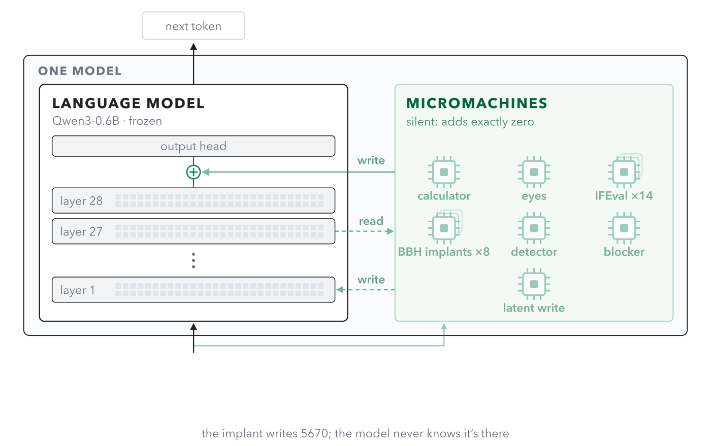
Today, teaching a language model a new skill means fine-tuning or RL on data that exercises it, and hoping nothing else breaks, or wrapping the model in tools, sandboxes and parsers. What if instead you could write the skill straight into the model's weights? Like having an exact co-processor that comes with the model, stays off until it's needed, one that can even be trained/RL'd along with it?
This was an old wish of mine! In 2023, in Looped Transformers as Programmable Computers [1], Angeliki and Shashank hand picked the weights of a transformer and put it in a loop so that the model could run programs (a calculator, a computer, a full blown gradient descent run in context!). The process was quite painful, but the results were cute and the "looped transformer" name stuck around :).
At some point in the paper we wrote (verbatim):
we hope that our findings will contribute to the development of methods to enhance the capabilities of trained language models by utilizing smaller, reverse-engineered transformer networks for specific algorithmic tasks
We really wanted to do this back then, but handwriting even small circuits was painful, especially ones working in token space that then had to be attached to a bigger model. So it never happened.
However, agents can now read/edit weights directly, as our MIT friends showed with weight-space programming [2].
So I had Claude Code try this on a few small open models. The recipe was a simple loop: 1) run the model, 2) read its failures, 3) pick the ones that follow a pattern a small machine could fix, 4) write that machine into weights, 5) bolt it on the model and keep if the scores go up. Then, repeat.
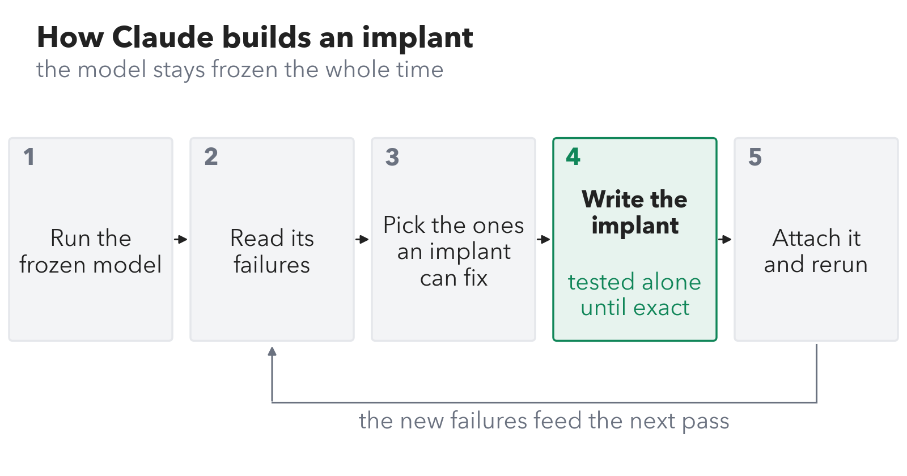
Doing so on a couple of small models and evals, Claude wrote a calculator, state trackers, logic solvers, instruction-following rules as exact programs compiled into weights... plus a small machine with a small trained part: a pair of eyes!
Bolted onto the weights of a frozen model, each one of these little machines stays silent until it is needed for a task. When they work together, they can increase accuracy on small models by double digits on arithmetic, GSM8K, BIG-Bench Hard and IFEval type of tasks.
I call these little machines, weight-space micromachines (WSMs), or... brain implants for LLMs :)
Here is a summary of results:
Here is a summary of the headline results on Qwen3-0.6B (top) and Qwen3-1.7B (bottom). On GSM8K, BIG-Bench Hard and IFEval it compares: the model alone, implants with no RL, plain RL, implants attached then RL, and RL then implants attached.
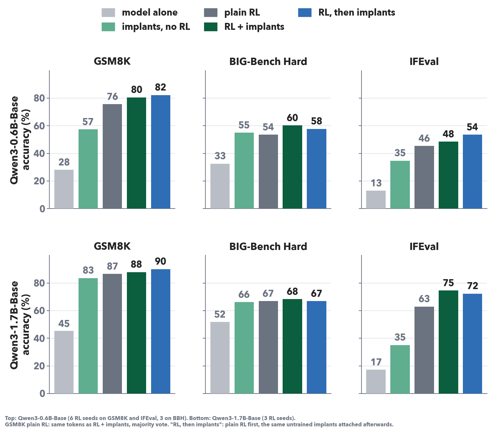
To be fair, most of the pieces here aren't new: people have compiled programs into transformers, put exact calculators inside networks, and trained models to use tools with RL (more on that in Related work). What I am doing here is perhaps putting it all under one umbrella: small, sometimes exact add-ons, written by an agent, that come bolted on the model and are RL'able along with it.
And no, these are not LoRAs. A LoRA is a low-rank change applied across the model's own weights, learned from data. An implant is a separate module on the side: attaching it doesn't change the model's weights, it computes one specific thing you can read and test (the calculator was exact on every arithmetic test we ran), it stays OFF until it's needed, and you can add, remove or compose as many as you like.
And yes, you can think of most of these as tools. But unlike a tool, they live in weight space, inside the forward pass, you can train the model together with them and RL teaches the model when to use them and the model distribution (and weights) reshapes around them.
Let me tell you a little bit more about it.
The idea is simple. Say your model would do better if it could compute f(x), but teaching it f is hard, expensive or perhaps bad for its other skills, and using a tool, or an inference-time intervention (eg, best-of-N), means having a sandbox and orchestration around the model. Instead one could have an agent write a small machine in weight space (a micromachine!) that computes f(x) exactly, and attach it to the model. Akin to a... brain implant!
A bit reminiscent of Neo in The Matrix: they "upload" the program in his brain, and seconds later:
Notice how there's no sandbox around Neo, and no Python code wrapped around him: it's all in his brain. That's what I'm talking about!
So you (or Claude) create an implant, attach it to the model, and it does exactly one thing, and only when it's supposed to; the rest of the time it stays OFF, and the outputs are bit-for-bit identical to the original.
Remove an implant and you get the original model back. (Well once you RL the model with an implant attached, the model leans on it, more on that in §5.)
When I say "all in the weights" I mean this literally: every implant is extra weights (plus in some cases a few registers, which act as a small memory implant) that run inside the forward pass and the decode only samples tokens. There is nothing programmatic allowed around the model.
The implant, in weight space, sits "parallel" to the model and reads the same tokens as the model (or, as we'll see later, some of its hidden layers).
Though it doesn't have to sit on the side: it could be wired in as a few more attention heads, an extra layer, or written into dead neurons the model doesn't use, like Lazarus. But a separate, parallel block is just easier, and if you fine-tune the model later, you don't mess with the implant (or the other way around).

A concrete example of how it works: when the model has just written 2595 + 3075 =, a calculator implant recognizes that the model is about to compute an addition, and it steps in: it adds a vector to the model's last hidden state, right before the output layer, big enough so that the next tokens are sampled to be exactly 5670. Unlike a brain implant, the model doesn't know the implant is there: But it sees the right number show up in its own context and keeps on going.
OK cool! Let's see a few examples of these micromachines.
The first thing that came to mind was a calculator, as arithmetic is a classic failure mode of small (and larger!) models.
I asked Claude Code to build one in weights and attach it to a small Qwen model. It works like a tiny ALU (the part of a CPU that does arithmetic) and does so in three steps:
Only the Read and Write ends are "fitted" to the model. The arithmetic in the middle is a program Claude wrote that is compiled into ReLU layers.
The whole implant is about 2.4M weights, and yes, we know, it could be much smaller. But it's still tiny compared to the 600M parameters of the model.
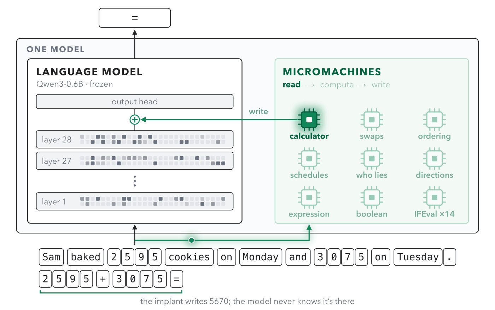
Claude tested it on every pair of numbers up to 59, every signed pair from −40 to 39 and 12k random pairs, for all four operations, and.... 0 mistakes! hooray.
On a frozen Qwen3-0.6B, the calculator increases >4 digit multiplication accuracy from near zero to 100%. Booyah!
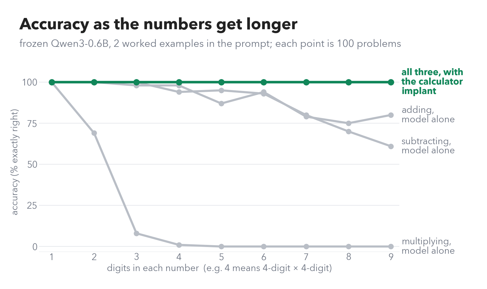
Does that particular implant help on actual (but still silly) math problems? On GSM8K [6] the calculator barely helps Qwen3-0.6B [5]: eg it goes from 52% to 53%. But on GSM-Hard [4], the same GSM8K test questions with bigger numbers it goes from 27% to 35% (26% to 33% on problems we never tuned the calculator on). RL widens that gap (§3.1).
So the implant works, and works only when the model actually uses it.
To use it in the above calculator case we just showed it a few in context examples in the prompt. But can we teach it to use the calculator instead?
You can teach the model to use an implant by fine-tuning it on format so it learns to call the implant, the way you'd teach a model a tool-calling format, eg., a call looks like <tool_call>48 * 2</tool_call> when it needs to multiply.
Below, we fine-tuned Qwen2.5-0.5B on the same ~7k GSM8K training solutions (plus ~3k extra arithmetic examples) in three ways: plain solutions with no calls; solutions where every calculation is a call, and the model has to fill in each result itself (so it has to learn the arithmetic), and one where the calculator implant is attached, so it fills in the result and the model only has to make the call.

The longer the numbers, the more the implant helps, eg., on GSM-Hard the model goes from ~13% to 23%, and on arithmetic templates it never saw from ~51% to 99%.
Therefore, fine-tuning teaches the call format, while the implant does the arithmetic.
Not every implant needs this. Implants the model calls (this calculator, most of the BBH solvers in §4.3) need a short fine-tune (or a few in-context examples) so the model learns to write the call. Other implants fire on their own, by watching what the model writes or through reading its hidden states, and need no fine-tune: the do-arithmetic-when-you-see '=' implant, the IFEval instruction rules, the mistake detector, the topic blocker, the latent write and the GSM8K "retry" set of implants, are all of the latter kind.
I thought what else would be a cute implant?? Hmm.. What if we gave Qwen eyes?
Qwen only reads text but one can flatten an image into a list of pixel values (same trick we did in our LIFT [7] paper with Kangwook Lee and Yuchen Zeng, where we fed non-language data to GPT-3 as plain text). For example, take a handwritten MNIST digit and write each pixel as one token, flatten row by row and get a bunch of tokens per image. Paste a few of these into a prompt and ask "What is image 1 + image 2 × image 3"?
Qwen can't of course "see" a digit in a pile of pixel tokens but the eyes implant can help it!
Inside the implant there is a small CNN (a few hundred K weights and trained on MNIST's 60k labeled digits). The rest is written by Claude like the other implants: as an image streams by in the prompt, the implant puts its pixel tokens back into an NxN picture, and when the image ends, it runs the CNN on it and stores the digit, then writes it when the model later asks for that image ("image 2 is a 7").
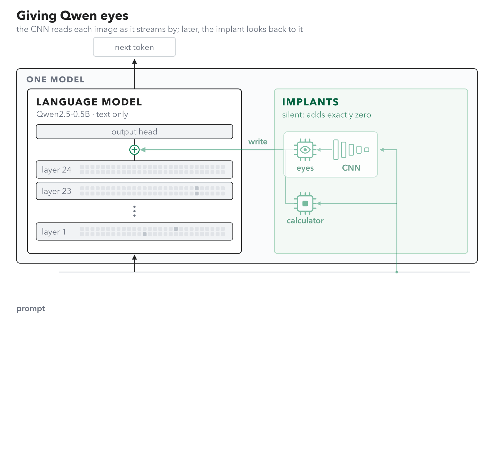
Like the fine-tune we did for the calculator, Qwen has to be fine-tuned to use the implant, so we show it a few examples written out in the right format. We compare with fine-tuning on correct solutions (same solutions, no implant) to see how much format vs function take to learn... and yeah there's a gap.

With 32 examples, Qwen+eyes (+calculator) scores 95% vs 4% without eyes. Plain fine-tuning does catch up eventually but is only at 93% after 4,000 examples and needs about 16,000 to match it. So the implant gets there with roughly 100× fewer task examples.
A Python tool that pastes the same CNN's digit as text does a bit better (96% vs 93% in our rerun, with fewer tokens), so the point is that this works in weights, not that it beats the tool.
OK you may say these are not "real eyes", and I would indeed agree. The model doesn't really see internally (in its original weights) what the CNN sees, so it can't use things like "this 7 looks a lot like a 1" etc. That is a weakness of bolting implants, rather than training one big model to do all of it at the same time.
But you could co-train the model with the implant! One could let the model activations read the CNN's features, and train the two together. We didn't do that for the eyes implant, but we did train the model with implants attached on several benchmarks below (§3 and §5), and RL does teach it things about its implants: when to call them, when to switch them off, which one to trust etc.
One can be a nihilist about this and say: it's just tools! And you'd be mostly right! The calculator accuracy gains are what a Python calculator would offer.
I think the key difference is not what the tool or implant computes, but where it lives, and that it can be trained together with the model.
A Python tool sits outside the model weights, so token generation has to be interrupted: you parse tokens, parse tool results, paste them back to context, resume generation. An implant is just more weights, so batching, CUDA graphs, fine-tuning and RL treat it like any other set of model weights. It stays dormant until needed and implants compose (meaning you can have multiple of them) without interfering with each other, and there's no need for a sandbox.
So far our micromachines worked directly on tokens: they read what the model writes and write tokens back in its context. But an implant lives inside (or parallel to) the model and so it can also look at internal hidden states, and peek at roughly what the model is "thinking", and can also intervene directly on them. The next three implants do exactly this: the first two read the model's thoughts, the third writes on them.
Going back to GSM8K (the same model as in §1.2, at 52%), where most mistakes weren't arithmetic but related to reasoning, one would wonder if a micromachine could help some other way.
Here's an implant idea: a mistake detector! (my student Zach Sifakis has been working on something related, keep an eye out for it!)
Right before the model commits to its final answer, the implant reads the internal states and attempts to predict whether a second look would help, and if so it force writes "Hmm, wait. Let me rethink this." instead, and the model keeps going (same idea as the "Wait" in s1 [18]).
But does a model know "internally" when it's wrong? Kinda! We ran Qwen3-0.6B on GSM8K problems and saved its activations right as it is about to write its final answer, labeled right/wrong and generated like that about 50k labeled examples. A small probe trained on those can separate right from wrong pretty well on test problems it never saw (eg AUROC 0.85 on GSM8K, 0.84 on GSM-Hard). This is in the spirit of Kadavath et al. [19]: language models mostly know what they know.
How does this implant decide when to fire? It uses one tiny probe with three heads that read hidden states just before the answer. One head asks "is this answer right?". The other two ask "would a rethink help?", now and after the model commits to an answer. For labels for this, Claude tried the rethink on many GSM8K training solutions: if a wrong answer turned into a right one, that's a "rethink helps" aka positive example. Why not just fire on likely mistakes? Because most wrong answers stay wrong even after a rethink, so that would mostly waste tokens.
The stitching that remains is standard circuit design by Claude performed in weight space: it watches the next-token scores (through a copy of its output layer) to know when an answer is about to come, and if a rethink runs 300 tokens without an answer, it force writes the answer marker itself.
Below is a real GSM8K test problem. The arithmetic is all fine, but it doubled the wrong day and is about to answer 5. So the detector fires, and the implant writes "Hmm, wait..." instead of the answer, and on its second pass the model gets 7 the right answer.
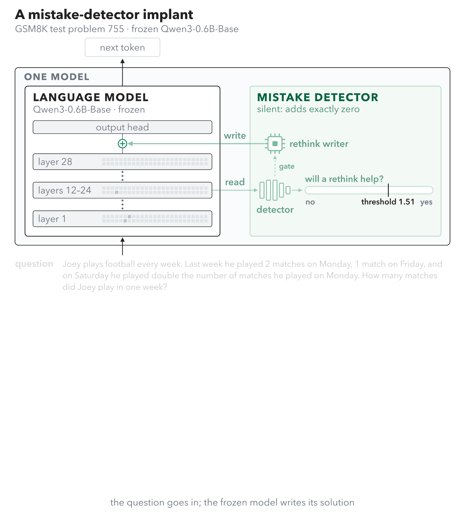
With the detector on, GSM8K goes from 52% to 56%, and GSM-Hard from 27% to 29%. With the calculator plus the detector deciding when to rethink, the model gets 35% on GSM-Hard (34% with the calculator alone) and 57% on GSM8K. (It beats a random trigger at the same rate by about 1.5 points on GSM8K and 1 on GSM-Hard; rethinking every time is up to 2 points better but spends about a third more tokens.)

The same idea, retrying when something looks wrong, comes back on GSM8K in §4.4, as a sanity check plus retries inside one call.
Can an implant that reads the model's state also block a topic? Say you never want your model to do math. Claude trained a linear probe on Qwen3-1.7B's hidden states at the end of the prompt, on about 9k input prompts written in lots of styles (homework writing, casual chat, other languages, code snippets), and tested it on 640 new hand-written prompts plus public benchmark questions.
When the probe fires, the blocker implant takes over the reply: it steers the model into saying "I can't help with math problems." and then ends generation. We compared it with the obvious alternatives: just asking in the system prompt, a strict system prompt, and a keyword list (how it's built is in Appendix A.2).
And the full blocker implant is again an implant inside the weights: it decides at the end of the prompt and then writes the decline sentence itself, word by word. No Python needed around the model.
Here's the blocker on two held-out prompts: a calculus request it shuts down, and a parent asking how to motivate a kid who hates math homework, which it lets through:
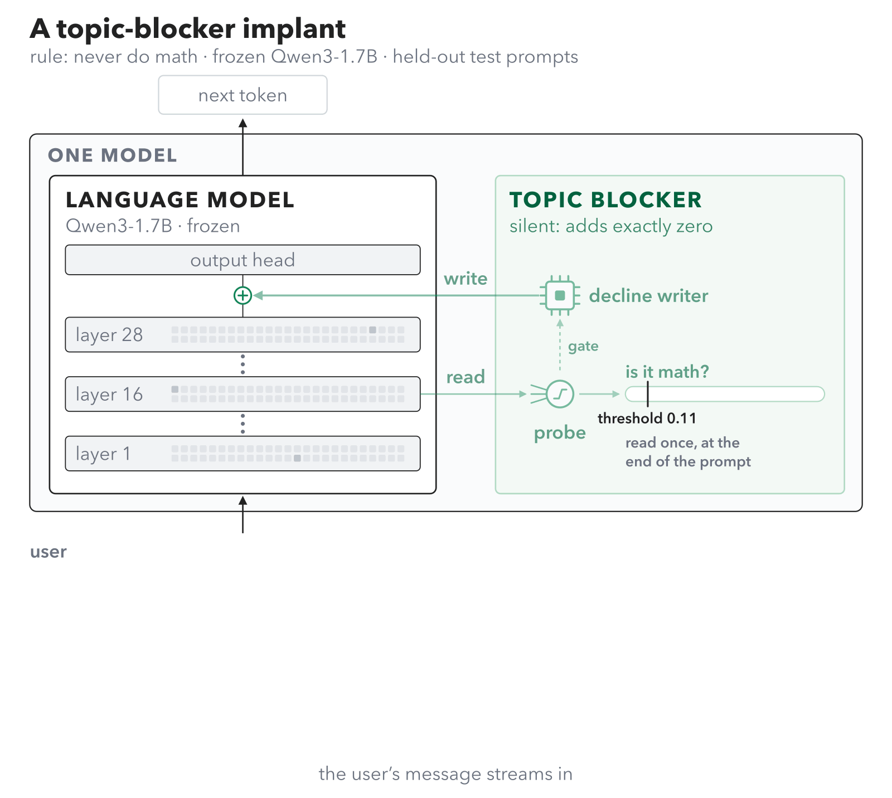
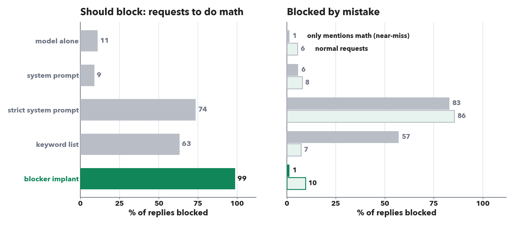
The blocker catches ~99% of requests it should block and rarely blocks prompts that just mention the topic ("my daughter hates math, how do I motivate her?"). The price is that it blocks ~4% of normal, non-math requests, and fires on 23% of non-math MMLU quiz questions. The obvious alternatives catch less math (a small text classifier blocks 91% and misses other languages, though it fires on only 2% of MMLU): a system prompt gets ignored or if made strict starts blocking most normal requests, and a keyword list can't tell doing math from talking about math.
One nice tidbit: in the version where the probe also watches the model's own reply, a harmless-looking request that turns into math halfway (scaling a recipe from 6 to 15 people) gets cut off once the model starts multiplying (it fires on all our drift prompts, though 17% still get some math out).
Cute :)
Every implant so far forces its result into the model as tokens (by adding to the last hidden layer inputs), which the model then reads as its own context. But can an implant skip the text and write straight into internal model states?
A small test: "answer (23×7)+58 in one shot". The 0.6B model can do 23×7 and 161+58 separately, but both at once only 15% of the time. So the implant computes 161 itself and, at the positions of "(23×7)", swaps in the internal state the model would have had reading "161" (found with a simple linear fit). The swap has to rewrite the model's cached states at those positions: writing only from that point forward does nothing (13%, same as no implant).
The model goes from 15% to 96–99%, and if the look-ahead implant writes a wrong result instead, say 171, it answers 171+58 about 97% of the time: it really does use the value. On a word-problem version it goes from 3% to 98%.
It's a silly toy example, but it makes a point: if an implant hands the model a "thought vector" instead of text, the model treats it as its own.

The wiring between an implant and a model is just more weights that so far had been hand-designed by Claude but they are learnable too.
Everything so far teaches the model to use its micromachines with a few examples in the prompt or during a small fine-tune. The obvious next question is: what if you do RL on the model with the implants attached?
Does the model learn to lean more strongly on them more as the reward goes up? What if you don't wire the implants properly, i.e., just connect them to a few intermediate layers, and let RL optimize the wiring? Will it figure out a better wiring than the one Claude Code chose for the implant?
Let's find out!
We started with GSM8K-style problems (plus a version with bigger numbers) and GRPO on Qwen3-0.6B-Base, with three settings: 1) no implant, 2) the frozen calculator, and 3) a broken calculator, same structure, but it writes wrong digits. Same recipe for all three, 2-3 seeds each, tuned for the calculator. RL trains only the model's own weights: the calculator and its wiring stay frozen. To make this efficient, Claude wrote a custom RL engine (of course): more than an OOM faster than its first HuggingFace backend.
Here is what we found.
The calculator still matters after RL, on big numbers. After 300 updates, plain RL takes the model from 53% to about 70% on the GSM8K test set, and with the calculator attached it lands in the same place. On GSM-Hard, where the numbers are much bigger, the gap is large: 44% for plain RL vs 55% with the calculator, averaged over three seeds.

RL learns to use the implant more often. The calculator fires on clean equations like "5 x 7811979 =", but much less on "5 coins * 7811979 dollars/coin =", and after RL the model writes solutions less in this style (17% of equations after 64 updates, from 30%; plain RL 24%), so the calculator fires more. There is a small catch: if after RL you switch the calculator off, the model is about 3.5 points worse than plain RL on GSM-Hard (40% vs 44%). It stopped doing big-number arithmetic itself!!
RL teaches when to not use an implant. With a broken calculator implant (the same calculator with its output digits permuted, so every answer is wrong) the model starts at 7%. RL climbs back to 37% within 64 updates by doing the opposite: it puts a unit word after most numbers (87%, up from 29%) ("8 apples + 747460 apples = 747468 apples") (the calculator is wired to fire at an "=" that follows "number op number", so a unit word in between mostly keeps it quiet), and the broken calculator goes from firing on 75% of equations to 12%. RL teaches the model to generate tokens that avoid using an implant that doesn't help!
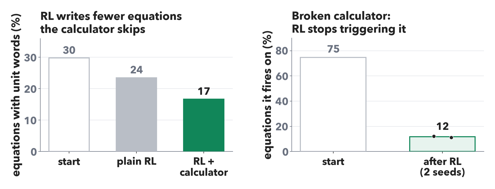
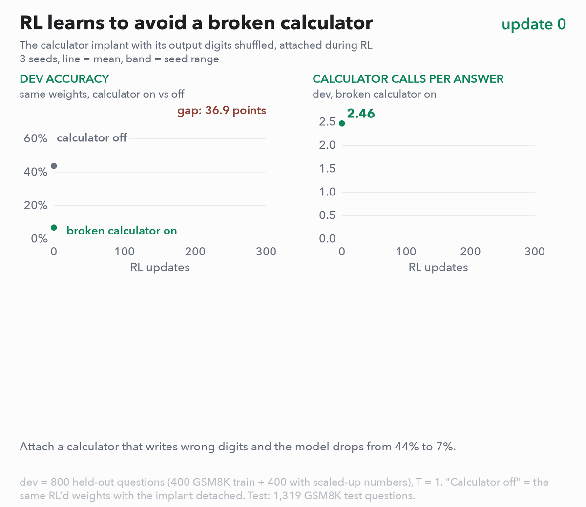
RL can rewire the implant. Next we kept the calculator frozen but made its wiring trainable: small zero-initialized adapters from the calculator output into layers 7, 14 and 21 and the final layer (each adapter is a small linear map that adds the calculator result into the model hidden state at that layer; starting at zero, they change nothing until RL changes them), plus a trainable "in-wire" (a small gate that reads hidden states) that can veto a call. In some of our early runs (4 of 8, one seed each), RL first "blocks" most calculator calls (the gate stops the result from being written, so the model does the arithmetic itself), then lets them back in by digit size: big numbers first, 1-2 digit numbers (which the model handles fine) last (the other runs just call every time).
This is so cool!!

RL learns where an implant is right. We also tried RL with a half-broken calculator: exact on × and ÷, but wrong on + and −. Called on every op, it reduces model accuracy down to 18-36% (vs 62% with no calculator). With a trained in-wire, RL somehow figures out which operations the calculator gets right: in five different runs, it ends up letting through 76-95% of × and ÷ calls and blocks almost every + and − call!! Nobody told it which operations are broken, RL pressure through the reward helped figuring it out.
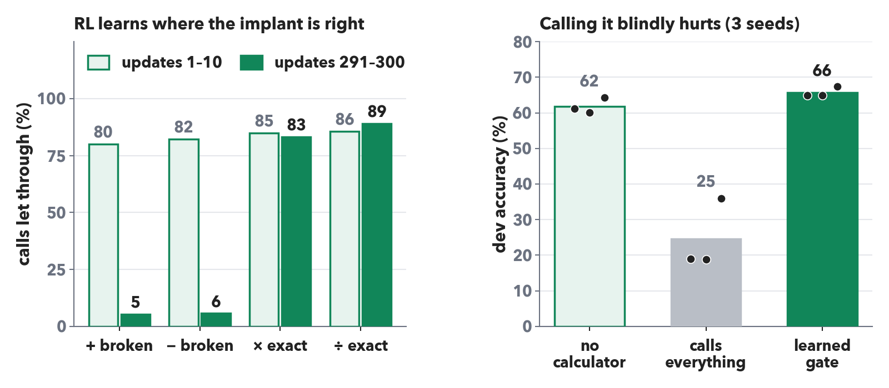
Training the implant itself can in fact break it. We also let RL train the implant's actual weights along with the model and the wiring. The calculator stops being exact at the very first update! At every learning rate we tried, even when it gets its own tiny learning rate: after 25 updates it is exact on anywhere from 92% of calls (at a rate so small it learns nothing) down to 1%. Maybe this is expected, since this implant is a program.
Why? Several of its units sit exactly at their on/off point (the ReLU's input is exactly 0 on some inputs), so any small change switches them on or off and flips answers. Even on less programmatic implants, like the ones we add on BBH training can also mess them up.
Training only the wiring, with the core frozen, keeps the calculator 100% exact at every learning rate we tried, and its best run scores about as well as the best core-training run.
So I suppose it's meaningful to keep the implant frozen, and let RL train the model and the wiring around it.

What it doesn't do (yet!). Learned wiring by RL doesn't beat the wiring Claude Code picked. Also RL couldn't discover an implant from scratch through new random links. But if you initialize the links from a short distillation of the hand wiring, then RL makes them 15-20% stronger and roughly doubles their effect: +13 points on GSM-Hard (three seeds; the animation below plays one of them). So RL is good at deciding when to use an implant it can already reach through the wires, and less so at building a new connection. Our links were simple, though, better ones may change that.
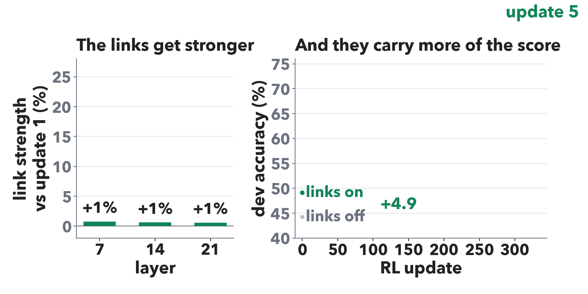
I was curious: what if you took a benchmark and asked Claude Code to climb it by finding holes in a small model and adding micromachines to patch them? How would the accuracy scale as a function of holes patched and implants added?
So I asked Claude Code to find holes in the small Qwen models we've been playing with, on a few benchmarks: GSM8K [6], BIG-Bench Hard [9], and IFEval [10].
How do you write consecutive implants? Claude Code runs a loop that looks a lot like RL (without gradients), except what changes is the set of implants, while the main model weights stay frozen.
Left alone, the above implant discovery loop can and will overfit. In our first pass Claude ran on the BBH questions themselves, the scores shot up, and some implants turned out to only work for one very narrow kind of question. For example a "swap tracker" only recognized BBH's seven names (Alice, Gertrude etc.). These are not useful tools: f(x) collapses to "if this is the question, here's the answer". This is reward hacking, plain and simple.
BUT, on the bright side, an over-fitted implant rarely fires elsewhere, so it doesn't break anything.
The fix was some oversight, from me or from a judge, so we changed the loop:
OK let's try to climb the hill again, without cheating.
IFEval [10] evaluates whether a model follows instructions like "don't use any commas", "answer in all lowercase", "end with the exact phrase
So, following the implant discovery loop above, Claude wrote 14 rule implants for the frozen Qwen3-0.6B, and these require no fine-tuning: unlike the calculator, these implants don't wait for the model to write a call and can act on their own.
Each has two parts: A reader that detects the instruction in the prompt (and tells "don't use commas" apart from "commas confuse me"). An enforcer that watches the model write and steps in only when it's about to break a rule: if its top pick is a comma, it "urges" the model to go with the second best pick that isn't a comma. The model still writes at least 98% of the tokens (at least 93% on the prompts where an implant steps in) while the implant adds things like bullet markers, quote marks or the repeated request, etc.
Almost half (44%) of IFEval problems combine 2 or 3 instructions ("a poem about the sea, all lowercase, no commas"). Here's how often they're followed, with and without implants:
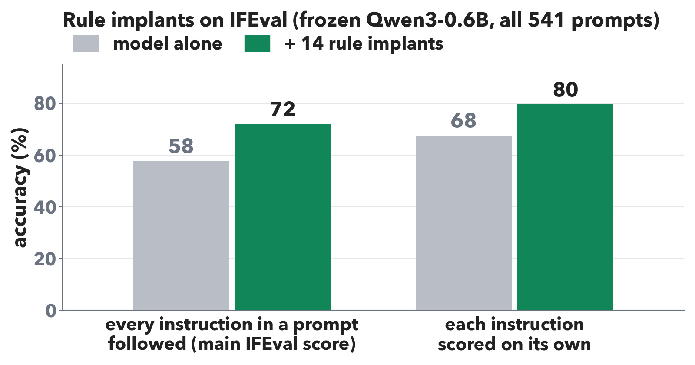
The implants fixed 80 prompts and broke 3, and on the 324 prompts where no implant fired, the output was byte-for-byte the model's own (so idle implants don't interfere).
Here's how often each rule's own instructions are followed (with all 14 rules attached):
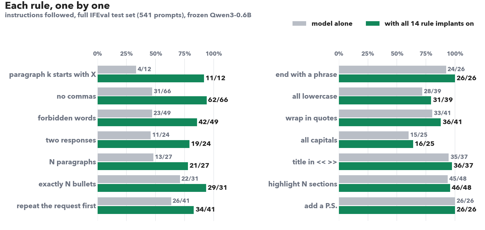
One could ask: could the model just think harder to resolve this without imaplnts? With Qwen3's thinking mode on and the same token budget it scores 59% (vs 58% without thinking and 72% with the implants).
And here's the scaling "law" across a few Qwen3 models (ok it's not a law it's just a curve that goes up):
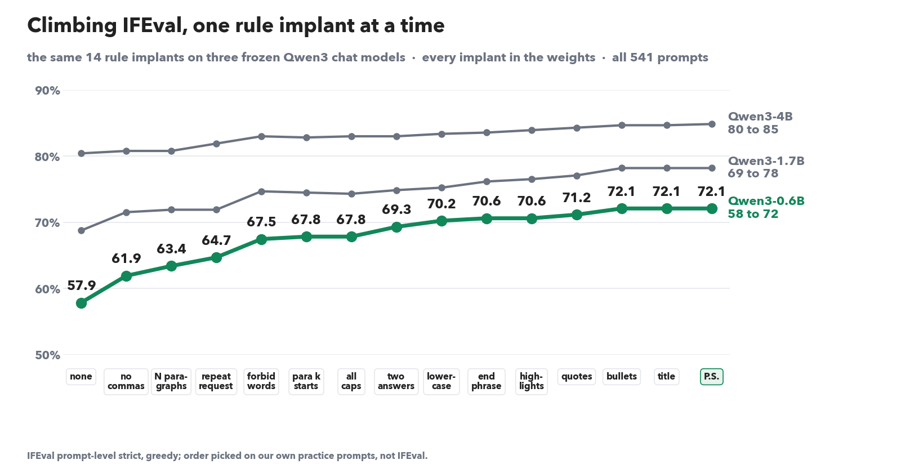
(How the 14 rules are compiled into weights is in Appendix A.1.)
BIG-Bench Hard [9] has 27 kinds of puzzles, and for some of them a 0.6B model clearly needs a tool. Two styles come up a lot. One is state tracking: in "shuffled objects" (3 of the 27 tasks), Alice, Bob and Claire swap balls and you say who ends up with which ball. The other is ordering: in "logical deduction", things like "the owl is left of the robin" define an order that the model has to work out and typically small models are bad at. Others require schedules, directions, or use of plain arithmetic.
Claude wrote 8 implants, each a tiny exact solver for one kind of BBH puzzle, most of them relatively generic functions. Most are call tools: the model writes the puzzle in a short compact form, like <tool_call>track ...</tool_call>, and the implant reads that call, solves it, and writes the answer back as the next tokens. Here are some examples:
(3 + 4) * 2 =, and write the answer right after.The other three are narrower, each built around one BBH task, and honestly they sit closer to "an implant that fixes one type of quesiton" line than I'd like. And yes, this is programmatic solving, yet the model has to still turn a question into a compact call, and the implant does the reasoning required behind the call. That's a tradeoff I suppose: you give up generality to get exactness on the procedural parts of the task.
The figure below shows the 12 BBH tasks these implants cover, in three setups: the base model (Qwen3-0.6B-Base), the model after a short fine-tune that teaches it to write calls (432 generated examples) but with implants OFF (dark grey), and then implants ON:
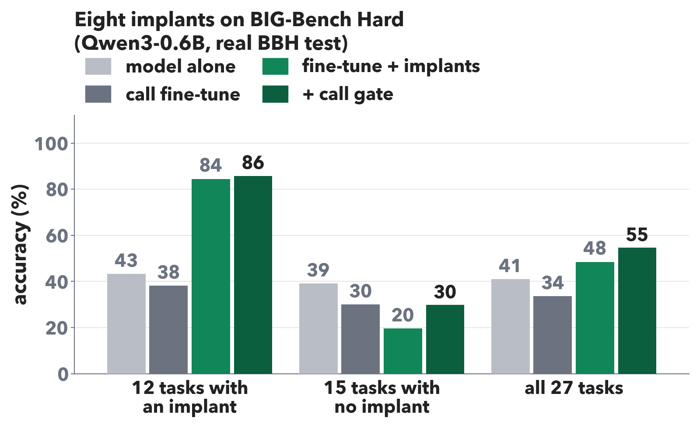
On the 12 tasks with an implant, accuracy goes from 43% to 84% (the fine-tune alone gets 38%). One thing to note: the fine-tuned model gets implant-trigger happy and also calls tools on the other 15 tasks, dropping their accuracy from 39% to 20%. Part of that is fixable, as we'll see next.
But the model also calls tools where none is needed, so Claude added... another implant. A call gate reads the hidden state as the model starts a tool call and blocks the call if no implant fits. Stray calls drop from 59% to 4%, and the 27-task average goes from 48% to 55% (the model alone gets 41%).
All 27 tasks, one by one, with the call gate:
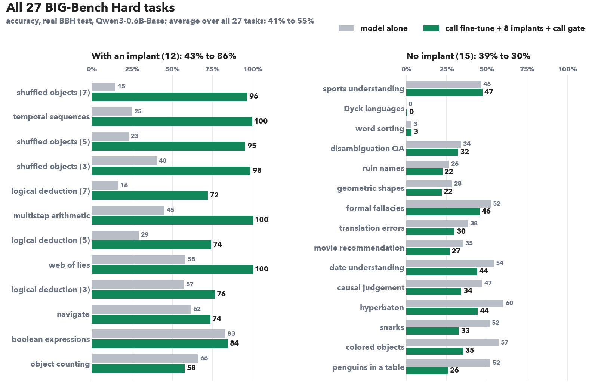
And the scaling law (ok yeah it's a curve again) for BBH:
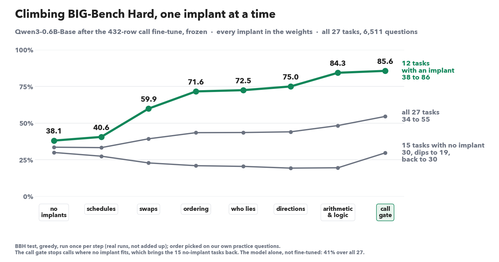
So did we just overfit BBH? The implants were built and tuned only on Claude's look-alike synthetically generated questions, never on BBH questions (though we did read BBH scores between versions). On our own questions in styles they never saw, they still help a lot, and on the judges' harder rewordings they more than double the score (3 to 7 out of 16). Maybe BBH is too boring of an eval :)
How many examples does learning the format take? Not too many. On BBH-style questions, we fine-tuned Qwen3-0.6B on just about 100 examples that call two implants. With implants on, it gets 75% on our own fresh questions versus 29% for the base (65% vs 19% on unseen styles). Without implants, the format fine-tuned model is no better than the base: finetuning on the format to call an implant and calculate f(x) alone teaches it nothing about the f(x) the answer needs.
Couldn't plain fine-tuning do the same? Learning to make the call takes very little FTing (~100 examples). A reasonable control is fine-tuning on the same questions written as plain step-by-step solutions, with no implants. That teaches the model some of these procedures, but from ~100 examples on the implants are more accurate.
GSM8K [6] is grade-school math word problems, where the calculator alone barely helps. The model is Qwen3-0.6B-Base after RL with the calculator (the RL'd model from §3), now frozen: the climb adds implants without any more RL. Every implant is in the weights and runs in one generation call: the decode loop only samples, and stops when an implant writes the stop token. Without implants it gets 68% on test.
Claude wrote, one at a time:
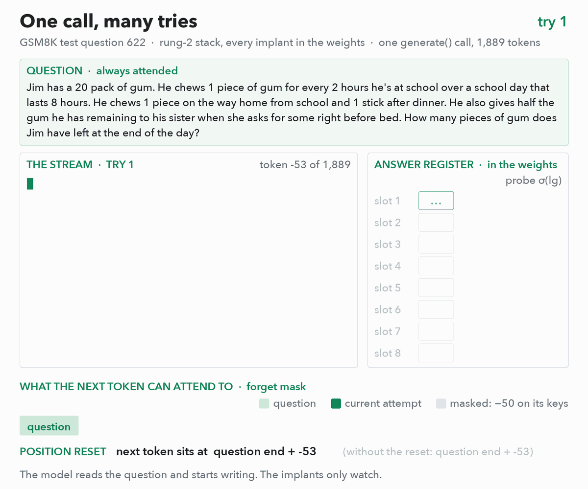
And here's what each implant adds, stacked one at a time on the same frozen model, all in one call:
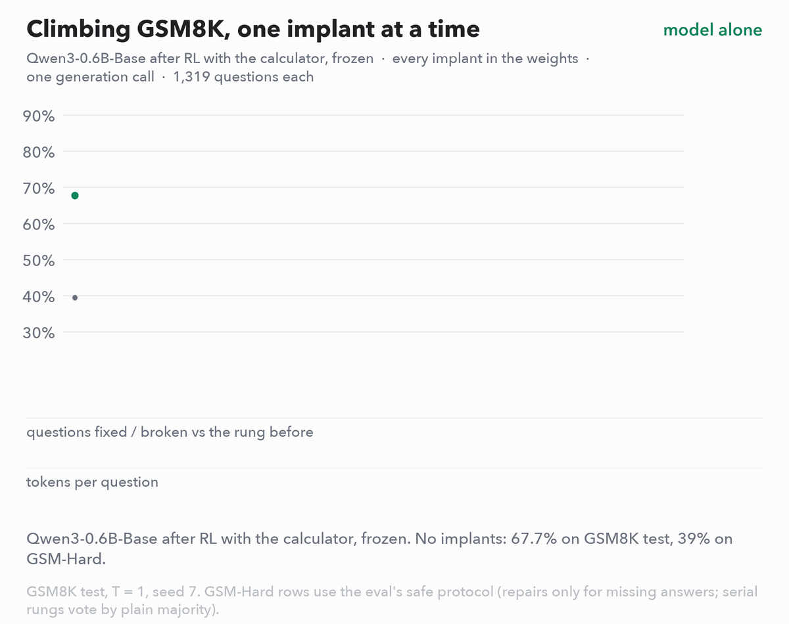
Two surprises. First, plain retries copy the old attempt with whatever mistakes it had, e.g., on a retry the model copied its failed attempt through attention and arrived at an impossible answer in 62 of 80 cases, hence the utility of the forget-mask. Second, more tries didn't help at first (8 tries in one call: 71.9%, no better than one try), because each later try is farther from the question so the model is not trained to overcome this (positional encoding weirdness). The position reset implant fixes that (yes it is a weird implant i agree): 8 tries in one call reach 81%, as good as 8 separate calls with a majority vote (80%), so this is exactly like self-consistency but implemented in the weights.
What's left is mostly the voter picking the attempts.
So far the model stayed frozen and while adding the implants. Since implants are just weights, you can also train the model with them attached. This section asks what RL does with them: does it beat plain RL (§5.1), and does it learn which implants to use and which to switch off (§5.2)?
Same frozen model, same recipe, four rows. To keep the comparison fair, we use one base model, Qwen3-0.6B-Base, and the same four settings for GSM8K, BIG-Bench Hard and IFEval: 1) the model alone, 2) the model after RL, 3) the model with the implants but no RL, 4) and the model RL'd with the implants attached.
Both RL settings use the same GRPO recipe (300 updates, 64 prompts × 8 samples, learning rate 1e-6; 6 seeds on GSM8K and IFEval, 3 on BIG-Bench Hard) and train only on training or look-alike synthetic questions, never on the test (yeah i know this can still leak, but let's ignore this).
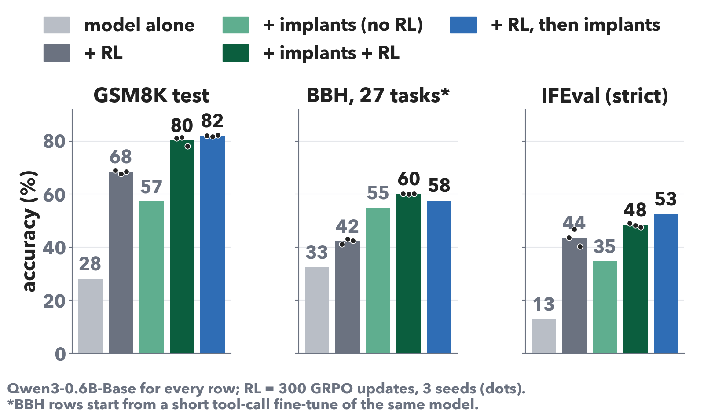
Of these four settings, RL with the implants ends highest on all three. On top of RL, the implants add 12 points on GSM8K (17 on GSM-Hard), 7 on BIG-Bench Hard (against plain RL from the untouched model) and 3 on IFEval (6 seeds on GSM8K and IFEval).
And general skills don't decrease: on MMLU, ARC-Challenge, HellaSwag, WinoGrande and NQ, the model RL'd with implants stays within a point of the base model, just like plain RL; the implants never fire there.
What about the other order: implants first, then RL? We took the full §4.4 stack and RL'd the model with it attached. Two things happen. RL can learn what an implant does: without the position reset implant, RL fixes the later tries by itself (72% to 80%). But once the reset is there, RL adds nothing on GSM8K: after RL the tries agree with each other more, so the vote has less to work with. And the RL'd model comes to rely on the forget-mask implant: switching it off now costs more than any other implant.
Next we attached all 23 implants at once to Qwen3-0.6B-Base (the calculator, the 8 BBH implants and the 14 IFEval rules), and I was worried they'd not play well with each other up under RL. But they mostly play well together.
Irrelevant implants don't get in the way of a given task. Next we attached every implant at once but still trained on math problems only. Is a pile of implants that mostly have nothing to do with the task bad? Nope.
The BBH and IFEval implants don't fire on GSM8k. The three implants that do arithmetic (the calculator plus two BBH arithmetic implants) stay switched on. In a control run where every implant but the calculator was scrambled (they still fire in the same places, but their outputs are shuffled, so every answer they write is wrong), RL shut the scrambled ones off within 25-50 updates, and the correct set ended ahead on GSM-Hard in all three seeds. RL kept the good calculator in two of the three seeds; in the third it switched the calculator off too, which is most of that 14-point gap on GSM-Hard.
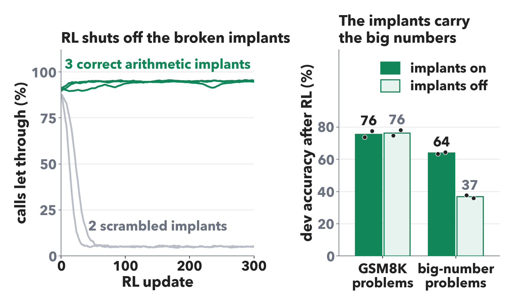
A mixed bag of implants on a mixed bag of tasks. We attached every implant to Qwen3-0.6B (chat), mixed GSM, BIG-Bench and IFEval questions, and ran RL. Each implant ends up used on its own kind of question, and the model beats plain RL by 13 points (58% vs 45%, 3 seeds). If a sloppy fine-tune leaves it calling the wrong implant, RL removes the wrong calls that cost reward. And if we mess up the implants, RL learns to switch off the broken ones.
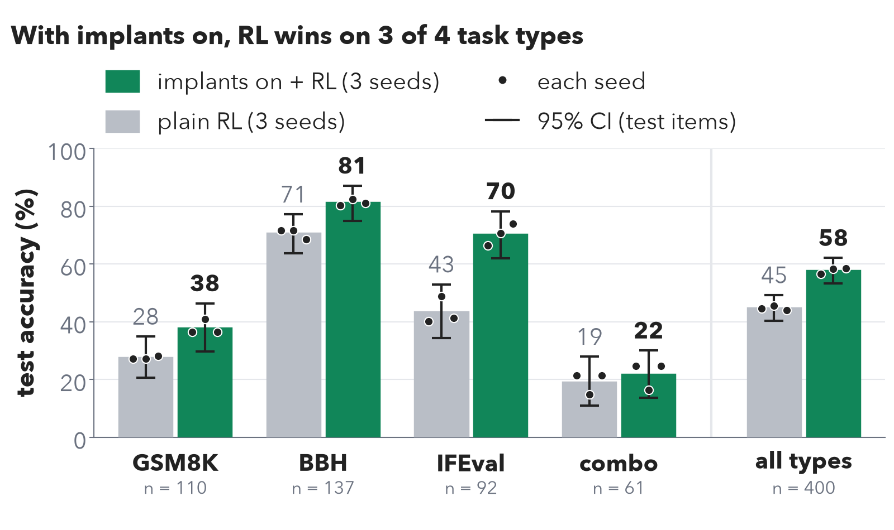
RL picks the better implant. The model has two ways to do arithmetic: it can write a <calc> call, or let an '=' implant fill in the answer whenever it sees = in the context. During RL, <calc> calls decrease from about 80% of GSM answers to about 25%. RL isn't giving up on the calculator, though. If we remove the '=' implants, <calc> stays strong and if we make them unreliable, <calc> comes back. RL drops an implant only when another one does the same job better.
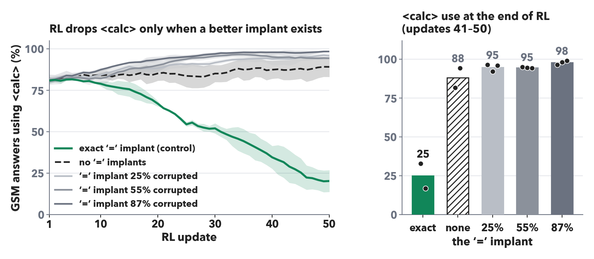
Most of the above was found by running the implant discovery loop on one small model, Qwen3-0.6B: its failures told Claude what to build, and the implants were built and debugged against that model. So a fair question is: did we just build a bag of patches for one silly model, or find something more general?
Well let's take these implants and slap them on other Qwen models and see what happens!
Moving an implant from model A to model B mostly touches its two read/write ends that bolt on the main model (plus any fitted probes and thresholds): if one rebuilds the reader for B's tokenizer, and re-solve the write directions against B's output layer. The circuit in the middle, the f(x) itself, doesn't change
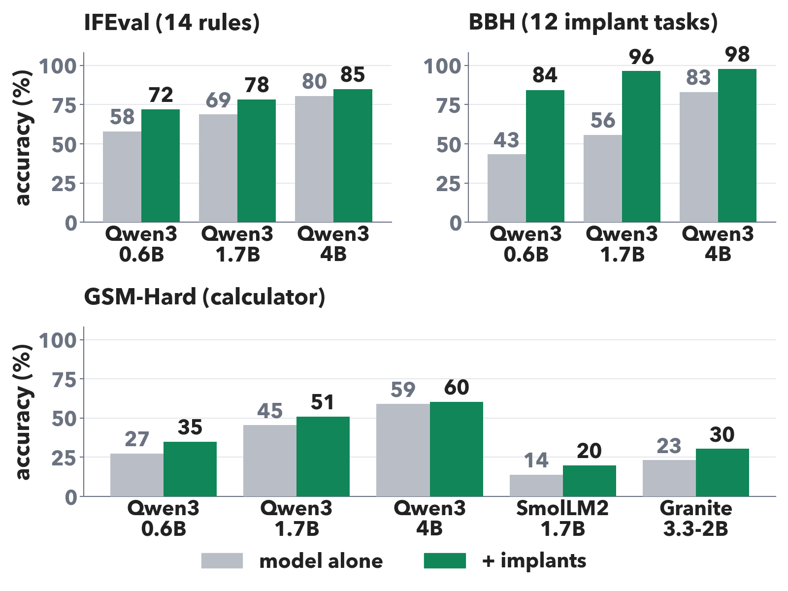
What we found:
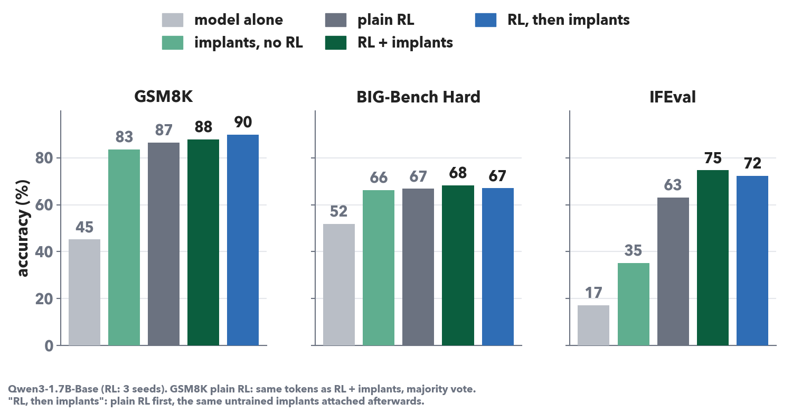
The same on Qwen3-1.7B. We reran the four settings on Qwen3-1.7B-Base with the same implants (only their read and write ends refit), and the same conclusions hold: RL with the implants beats plain RL on all three benchmarks, and on GSM8K RL first, implants after does best.
So micromachines transfer, just less well than, say, a Python tool: the function is portable, but the reader has to speak the new model's tokenizer language. But it's perhaps encouraging that implants built on a small model still help bigger ones.
So, back to the question of tools from §1.5.
Micromachines can read and write on model internal state, so they can react to what a model computes, and they perhaps are a reasonable choice when a tool is small, exact and used often mid-generation. Because they are just weights, you can fine-tune and RL the model with them attached: RL learns when to use each implant and when to switch it off, and can even train the wiring between model and implant.
An agent can build them in a loop, and accuracy climbs with each one it adds. Like any agentic loop it can reward-hack (ours did, on BBH), so held-out tests and independent judges matter. An agent can also maintains a small library of patches for a specific model, each with the failures it fixes, its tests and an off switch, the way we maintain code.
I don't want to oversell the findings: the models are small, and most of the gains are where a tool would help anyway.
But it's also kind of cool that an agent can look at the failure modes of a model and write exact little machines into weight space to patch them, and bolt them on in weight space mostly without breaking anything. And that RL then teaches the model how to use them.
I think this whole side quest may have been a bit silly, but it was fun. I started this roughly a week ago. In 2023 this would have been a couple of semesters worth of work with a few talented PhD students.
I'm curious to see what people think, and if this is useful at all.
Have fun building micromachines!
Most of the ingredients here come from other people's work.
Writing programs directly as transformer weights goes back to RASP [11] and Tracr [12], and to our own Looped Transformers [1]; agents reading and writing weights directly is the weight-space programming of [2], and in the last few weeks agents have hand-written exact standalone transformers for algorithmic tasks too (iWSP [29], "Written, Not Trained" [30]).
People have also put exact computers next to or inside language models before: Neural Comprehension [13] plugged compiled networks into an LM, IGC [14] put a gated calculator inside a fine-tuned Llama, MathLLM [21] adds exact arithmetic (with residue number systems) inside a frozen model's forward pass, Qwenputer [15] compiled a whole RISC-V CPU into Qwen, and Percepta [16] ran WebAssembly inside a transformer, and Sketchpad [31] attaches a certified-exact arithmetic adapter to a frozen Qwen3.5-0.8B that leaves the base model untouched when off (trained and then certified, rather than written by an agent).
Handing the arithmetic to tools is what Toolformer [17] and PAL [4] did, and most of the gains we see are the ones a Python tool would give. The "wait" comes from s1 [18], and reading "am I wrong?" off the hidden states builds on Kadavath et al. [19] and Azaria & Mitchell [20]. Turning images into text tokens is what we did in LIFT [7].
Closest in spirit is the concurrent WeightCode [32], where an LLM writes programs that install new, gated capabilities into trained vision and sequence networks; here the host is an LLM (frozen or RL'd), most implants are exact programs that sit outside its weights, and RL trains the model with them attached.
Another close work is Frozen Tape Modules [22] which puts a separately trained, frozen module inside the forward pass of a small Gemma, behind a learned "controller". The Bicameral Model [23] couples two LMs through their hidden states, so one of them can drive a calculator or a Z3 solver. OccamLLM [24] and Dhanraj & Eliasmith [25] run exact arithmetic or rules off the hidden states, and the latter writes the result back in, the closest prior to our latent write. On the RL side, ReTool [26], ToolRL [27] and ToRL [28] train models to use tools, but there the tool sits outside and talks in text.
So we're not the first to put a tool inside a network. What's different here is mostly how WSMs are created and how they behave once they're in. An agent writes them as exact programs straight into weight space, and you can compose many of them on one frozen model. Most stay silent by construction, so the model is bit-for-bit unchanged until one fires. Moving one to another model mostly means refitting its reader and writer (plus, for implants the model has to call, the short fine-tune that teaches it to write the calls). And because they live in the forward pass, RL can train the model with the implants it already has wired in.
All 14 implants are again compiled into plain weights: about 9K ReLU activations, plus two big vocab-sized lookup tables (348M numbers, mostly a copy of the output layer) so the implant sees what the model will write next. It's a rule enforcing machine: hard-attention heads read an instruction from the prompt (say, "all lowercase"), counters track things like bullets written so far, and if the model's next token would break one of the rules, the implant swaps in its best allowed one. Perhaps you can think of this as constrained decoding, but it happens through the weights of the implant.
How is it built? Three steps all automated by Claude.
Data: Claude had a bigger open model (Qwen2.5-7B-Instruct) write about 7,600 user messages: math requests, messages that only mention math, and everything else, across 10 styles (homework dumps, casual chat, code, stories, ...) and 8 languages. Plus 1,700 GSM8K and Alpaca training questions (funny, Claude insists on picking "older" datasets all the time..)
Classifier: run the frozen 1.7B on each message, get hidden states at the last token of the prompt, fit a logistic regression.
Implant: the probe becomes a single ReLU unit inside the implant. If it fires, the write forces the "decline sentence" and then the end-of-reply token. If not, it adds zero, so does nothing.
All the code is at github.com/anadim/weight-space-micromachines. No model weights are in there: every implant is rebuilt from code on top of public Hugging Face checkpoints, plus small fitted probe and direction files (the largest is about 7 MB).
python demo.py attaches the calculator to a frozen Qwen3-0.6B-Base and checks that the logits are bit-for-bit identical when it's silent (CPU is fine).REPRODUCE.md has the exact command, the expected number, the seed and the runtime for each result.gsm_push/ is the one-call GSM8K stack (engine, implants, eval harness), and rl/ has the RL engines and launchers.Every result needs one GPU. We used A100, H100, A40 and B200; 0.6B evals fit in under 20 GB and RL runs need 30–60 GB; an RL run with implants (300 GRPO updates) takes about 1 to 5 hours on one B200.